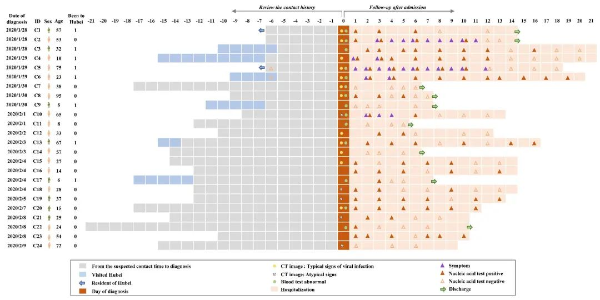
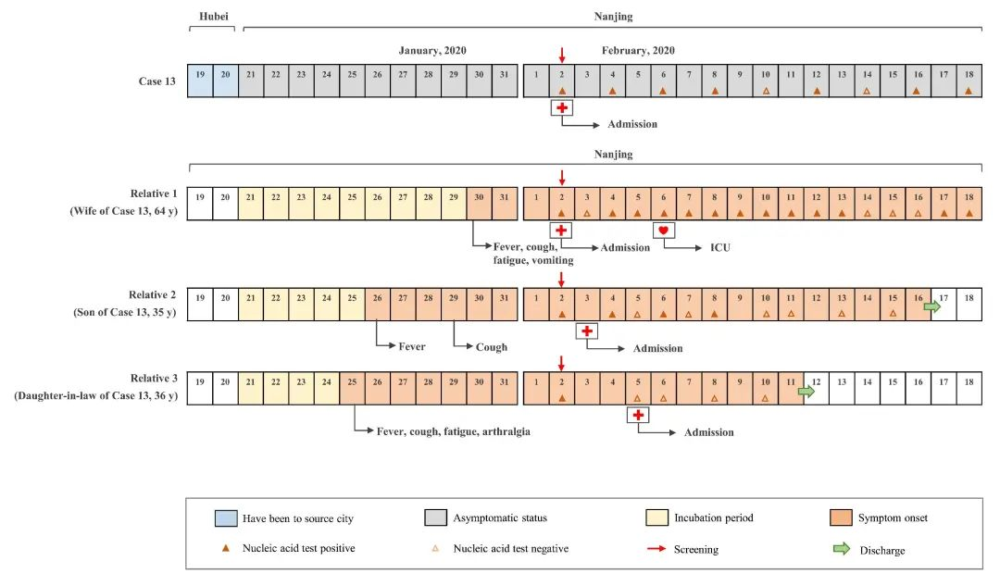

无症状感染者是否会传染？研究显示传染期最长或超29天
原文链接 备份链接 图片来源：图虫 实习记者：刘世龙 “ 我国辽宁、浙江、山东等多个省份都发现了无症状感染者，且部分地区甚至还出现了疑似无症状感染者成为传播源的案例。 ” 无症状新冠病毒感染者是否也会传染？日前，南京市第二医院（南京中医药 …
澎湃新闻记者 贺梨萍 张若婷
可查资料显示，“钻石公主”游轮上1723名接受检测的旅游者中，有189名是无症状新冠病毒感染者。这显然暗示：在人群中存在着大量的无症状感染者或者症状轻微患者，但他们未被发现。
日前，南京市第二医院（南京中医药大学附属南京医院）、南京医科大学等团队的研究人员在预印本平台medRxiv上在线发表了一项研究成果“南京地区密切接触者中24例无症状新冠病毒感染者的临床特征”。研究人员表示，识别和隔离无症状感染者和症状轻微者是疫情半阶段防控的关键。
此前很多研究都报道了新冠肺炎患者的临床特征，以及人际传播的证据。新冠病毒的基因分析显示该病毒和SARS-CoV相似，但不同的是，新冠病毒在患者尚处于潜伏期、并且活动如常的时候就已经是移动的传染源了，这造成了病毒的进一步传播。
值得注意的是，截至目前，国内无症状感染者的数据有限。该研究团队对江苏省南京市1月28日至2月9日之间、医院和社区内的所有的新冠病毒密切接触者进行了流行病学调查，对经咽拭子核酸检测呈新冠病毒阳性的24例无症状感染者的临床特征进行了研究，同时描述无症状感染者的病毒传播潜力。
研究团队提到，他们找到的所有无症状病毒携带者都被南京第二医院收治，因此该研究样本在南京具有很强的代表性。他们建议，由于大规模的返工返校正在进行中，积极的接触者追踪措施和严格的健康监控应仍然是中国乃至全球的重要防控战略。
此外，由于患者核酸检测转阳现象并不少见，研究团队强调应对已出院的新冠患者进行隔离和多次病毒核酸检测。
无症状感染者症状较轻，核酸检测对识别年轻群体至关重要

24位无症状感染者的基本信息，蓝色框为在湖北的时间，实心棕色三角代表核酸检测阳性，空心棕色三角表示核酸检测阴性
论文显示，病例中没有医护人员，其中8例（33.3％）近期有湖北暴露史（病例1和5是湖北居民，病例3、4、6、9、13和17曾去过湖北），他们在湖北的时间段可能是疑似接触时间。根据流行病学调查，没有湖北暴露史的其他病例的疑似接触时间标有灰色框。每个病例的诊断日期表明，自2020年1月28日以来，去过湖北的病例数有所减少。
调查的病例中有各个年龄段的新冠病毒无症状感染者，年龄范围为5至95岁（中位年龄32.5岁），而20.8％（5/24）的病例年龄在15岁以下。样本中男性病例有8例（33.3％），2例有吸烟史（病例1和病例13），2例被诊断患有糖尿病和高血压（病例8和病例13）。
5例（病例2、4、5、6和10）在住院期间出现症状。
5例病例均发烧，无畏寒，体温在36.5°C-38.0°C之间波动，但没有病例发高烧（体温> 39°C）。病例4、6和10除发热外没有其他症状。病例2还有咳嗽、疲劳和鼻塞症状；病例5还有咳嗽、疲劳、头晕和关节痛症状。
有几例病例在住院期间也出现了短暂症状，包括畏寒（病例8）、腹泻（病例21和22）和皮疹（病例16和18），但这些症状已由临床专家小组讨论，被认为是静脉内免疫球蛋白的注射反应。这些副作用分别由洛匹那韦/利托那韦和达芦那韦/考比司引起。
因此，以上病例未归类为新冠病毒引起症状的病例。
入院时，所有24个病例均进行了胸部CT扫描。其中12例（50.0％）表现出典型的新冠肺炎胸部CT图像，即显示肺部有毛玻璃或斑块状阴影。5例（20.8％）在肺部出现条纹阴影，这是一种非典型的图像。其余7例（29.2％）的CT扫描结果正常。
24个病例中有4例（16.7％）入院时出现淋巴细胞减少（小于0.8×109个细胞/L）。在4个病例中也观察到白细胞减少症，病例2和病例5在住院期间发生了白细胞减少。丙氨酸转氨酶、天冬氨酸转氨酶、肌酸激酶、C反应蛋白以及D-二聚体水平的升高症状不常见。
7例患者血清乳糖脱氢酶水平升高，其中3例伴有C反应蛋白水平升高。
总体来说，与先前在湖北武汉报道的相比，这些无症状病例病情较轻。
值得注意的是，研究团队发现，即使在住院期间，年轻的病例（<15岁）也更容易成为无症状患者，并且CT图像正常。这部分表明核酸检测对于识别年轻的密切接触者的无症状感染至关重要。
存在复阳现象，有病例传染期已长达29天以上
在初期治疗中有21例（87.5％）患者接受了抗病毒治疗，其中1例还接受了抗生素治疗、抗真菌治疗和免疫球蛋白治疗，还有2例患者接受了免疫球蛋白治疗。
所有这些病例均使用了干扰素雾化治疗，没有一例发生严重的肺炎，因此也都不需要全身性激素治疗、机械通气或进入ICU，没有一例死亡。
截至2020年2月18日（论文截稿），共有18例（75.0％）患者的病毒被清除（2次核酸检测连续阴性），其中9例已出院，其余9例留在医院以进一步观察。
6个病例（病例3、8、13、16、19和23）的核酸检测结果为阴性后，反转为阳性。
特别值得关注的是，即使在核酸测试连续两次阴性之后，病例18仍再次显示阳性。
5例（病例7、9、11、14和24）在短时间内清除了病毒。
作者将传染期定义为：从患者核酸检测阳性的第一天到连续阴性的间隔期。研究得出传染期范围为1到21天（中位数：9.5天，IQR为3.5-13.0天）。
但是值得注意的是，由于6名患者没有检查数据，且患者确切的首次感染日期不确定，因此上述传染期可能被低估了，实际传染期要比计算的更长。
特别是病例13无症状感染者，直到2020年2月18日仍对新冠病毒呈阳性，这表明传染期可能长达29天（从2020年1月21日至2月18日）。
研究人员发现7例（29.2％）患者的CT图像正常，住院期间没有任何症状。与其他病例相比，这7例病例更年轻（中位年龄为14.0）。CT显示正常与不正常的两组无症状患者的其他特征没有差异，作者们认为这可能是由于样本量有限所致。
这7例患者的血液检查均未见明显异常。这7例患者的中位传染期为4.0天。
截至2020年2月18日，这24例病例均未出现严重肺炎，仅5例在住院期间表现出典型症状。与此前的研究相似，发烧、咳嗽和疲劳是主要症状。先前代表着疾病严重程度的淋巴细胞减少和白细胞减少在本研究的无症状病例中并不常见。
病例13的家庭传播：无症状新冠病毒携带者的传播证据

病例13的家庭传播示意图，黄色框代表潜伏期，粉色框表示症状显现期
研究团队审查了每个因确诊或疑似新冠病毒感染入院的病例及其家庭成员的病历和流行病学史。
在病例13的家庭中，家属1（病例13的妻子）首先去了医院。
家属1为64岁女性，此前身体健康，但在2020年1月30日开始发烧（最高体温为38.7°C），且有咳嗽、疲劳和呕吐症状。3天后（2020年2月2日），她去了医院，并被检测出新冠病毒阳性。然后，医院对她的儿子（家属2），儿媳妇（家属3）和病例13进行了流行病学调查和核酸检测。
家属2和家属3都在检查之前就已经出现了呼吸道症状，最终也确诊为新冠肺炎。病例13的核酸测试结果也呈阳性，但他在入院时没有任何症状。在流行病学调查中，病例13表示他于2020年1月19日至1月20日曾前往湖北省黄冈市。
家属1、家属2和家属3是南京本地居民，并且表示在最近14天内，除了接触病例13以外，没有与任何确诊或疑似新冠肺炎患者的接触史。
在3个受感染的家庭成员中，家属1出现了严重的新冠肺炎症状，并于2020年2月6日被送入ICU。家属2和家属3在2020年2月18日清除了病毒。
总体来说，无症状的新冠病毒携带者病例13将病毒传染给了他的家庭成员，其中1名感染者发展为严重的新冠肺炎并被送入ICU。
这些发现表明，无症状携带者可导致人际传播，应将其视为新冠病毒感染的来源。
因此，研究团队强调，多重核酸筛查、严格监测近距离接触者，进而遏制疫情的潜在暴发具有重要的公共卫生意义。针对自我保护、密切接触者的主动隔离（无论是在家中还是集中式）的指导也都应不断强调。
该项研究还建议，应对已出院的新冠患者进行隔离和多次病毒核酸检测。
当然，该项研究还存在样本量小的限制，研究团队认为接下来需要进行大规模的多中心研究以验证研究的发现。
本期编辑 常琛
推荐阅读


原文链接 备份链接 图片来源：图虫 实习记者：刘世龙 “ 我国辽宁、浙江、山东等多个省份都发现了无症状感染者，且部分地区甚至还出现了疑似无症状感染者成为传播源的案例。 ” 无症状新冠病毒感染者是否也会传染？日前，南京市第二医院（南京中医药 …
原文链接 备份链接 柯溢能 / 微信公众号“浙江大学” 新冠病毒除了呼吸道传播以外，是否还有其他途径，这一直是科研人员关心的热点问题。 2月26日，浙江大学医学院附属第一院副院长、眼科学科带头人沈晔教授团队，在《医学病毒学杂 …
原文链接 备份链接 *************▲*************2020年2月21日，位于北京市丰台区杜家坎的新冠肺炎疫情防控工作集中观察点，护士正对房间走廊进行消毒。（新华社/图） 全文共5134字，阅读大约需要13分钟。 …
原文链接 备份链接 澎湃新闻记者 贺梨萍 新冠肺炎无症状感染者由于症状不明显或者几乎没有症状，很容易被忽视，这部分感染者也被认为是疫情防控的难点之一。 2月26日，来自中国科学技术大学附属第一院（安徽省立医院）、安徽医科大学附属安庆医院、 …
原文链接 备份链接 新冠肺炎疫情的发展形势，正在全球范围内急剧变化。 根据中国各省卫健委官方发布消息来看，截至 2 月 24 日上午 9 时，全国已有 23 个省（自治区、直辖市）在 23 日全天的新增确诊病例为零，其中包括北京、湖南、河 …